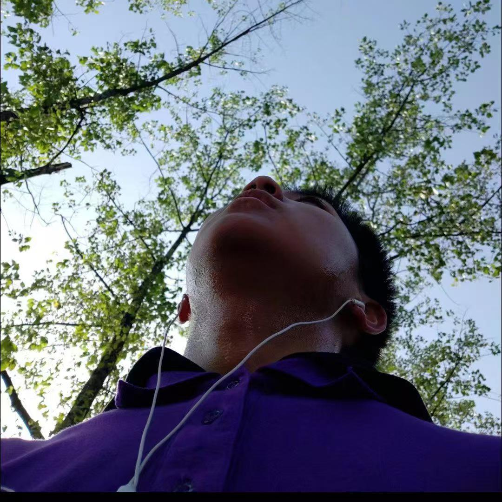

A little about me
Jianhao Song
宋建昊Vincent

Hi ! Great to see you here!
I'm an innovator, explorer and builder. I am not content to learn and just imitate the knowledge and skills that already exist, but crazy about creating something new, which echoes what Greek philosopher Socrates said 2500 years ago,
Education is a kindling of a flame, not a filling of a vessel.
I love that what I do really changes the world, and creating is a way for me to interact with this world and find myself.
Stay curious. Keep building.
— Vincent